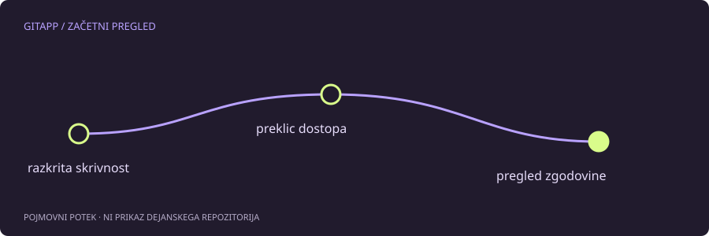

Skrivnost ni varna zato, ker ni več v zadnji datoteki
Če si dostopni žeton ali geslo potrdil in objavil, ga obravnavaj kot razkritega. Odstranitev vrstice v naslednji potrditvi ne odstrani stare vrednosti iz prejšnje zgodovine. Tudi git revert ohrani prvotno potrditev.
Prvi varnostni ukrep je pri ponudniku preklicati oziroma zamenjati prizadeto skrivnost in preveriti povezane dostope. Čiščenje zgodovine je ločen ukrep. Izvajanje slednjega brez preklica ne prepreči uporabe že kopiranega žetona.
Ne kopiraj skrivnosti v orodje za pomoč
Za razlago težave ne potrebujemo tvoje prave kode ali žetona. Dovolj je opis vrste skrivnosti, ali je bila objavljena in kateri repozitorij je prizadet. V javno prijavo ne lepi izpisa s pravo vrednostjo, tudi če nameravaš objavo pozneje izbrisati.
Orodja GitApp ne zahtevajo dostopnih žetonov in se ne prijavljajo v tvoj račun. Pomočnik izbira med opisi situacij, ne pregleduje tvojega zasebnega repozitorija.
Ocenjevanje obsega
Ugotovi, kje se je skrivnost pojavila: v potrditvi, dnevniku postopka, izdani datoteki ali priponki. Zaseben repozitorij ni razlog, da bi nepotrebno širjenje skrivnosti prezrl; dostop imajo lahko sodelavci, avtomatizacija in drugi sistemi.
Če je šlo za službeni dostop, vključi odgovorno osebo in upoštevaj notranji odzivni postopek. Lastnosti dovoljenj in revizijski dnevniki ponudnika so lahko pomembnejši od samega videza zgodovine Git.
Čiščenje zahteva usklajevanje
Prepisovanje zgodovine lahko spremeni veliko identifikatorjev in zahteva sodelovanje vseh, ki imajo klone ali odprte veje. Kopije lahko ostanejo tudi zunaj glavnega repozitorija. Zato splošni izbirnik ne ponuja enovrstičnega ukaza za dokončno odstranitev skrivnosti.
Uporabi uradna navodila ponudnika za odstranjevanje občutljivih podatkov in preveri, kaj postopek odstrani ter česa ne. Zgolj manjši rezultat iskanja v zadnji različici ni dokaz, da ni več nobene kopije.
Preprečevanje ponovitve
Loči vzorčno konfiguracijo od lokalne konfiguracije s skrivnostmi. Preglej pripravljene razlike pred potrditvijo in po potrebi uporabi ustrezne mehanizme preverjanja skrivnosti. Pravila prezrtja pomagajo pri nesledenih datotekah, ne zagotavljajo pa popolne zaščite.
Če zaznaš razkritje, nehaj širiti pravo vrednost v posnetkih zaslona in podpornih pogovorih. Nadaljnji korak naj zmanjša dostop in ohrani potrebne dokaze, ne samo polepša zadnje stanje datoteke.
Vir in obseg
Referenca: uradna navodila za občutljive podatke. Primeri so pripravljeni za učenje in niso opis posega v dejanski projekt. Preberi način preverjanja.